CODING AGENTS AS PIXEL WORLD MODELS
traex/GPT-6.1-Sol · 0181
点击播放 · 原生 RGB 像素
逐轮保存的候选
回放视频、检查图与代码变化。
每份候选均可单独播放。实际图片检查记录在下方工具轨迹中。
候选 01播放与检查图
点击播放 · 原生 RGB 像素

展开代码变化
--- 上一保存版本
+++ 本次保存版本
@@ -0,0 +1,285 @@
+from pathlib import Path
+import numpy as np
+from PIL import Image, ImageDraw
+import cv2
+from scipy.ndimage import gaussian_filter
+from artifact_io import save
+
+ROOT=Path(__file__).resolve().parent
+W,H=256,144
+S=4
+src=np.asarray(Image.open(ROOT/'first_frame.png').convert('RGB'))
+
+# The unchanged table and wall are reconstructed only where the moving objects
+# reveal them. All other photographed pixels remain untouched.
+def polygon_mask(poly, scale=1):
+ im=Image.new('L',(W*scale,H*scale));ImageDraw.Draw(im).polygon([(round(x*scale),round(y*scale)) for x,y in poly],fill=255)
+ return np.asarray(im)
+
+toolpoly=[(171.8,-2),(204,-2),(201.5,5),(198,12.1),(190.1,10.7),(188.9,15.4),(187.1,18.7),(184.1,21.1),(180.7,20.5),(177.9,18.9),(175.4,15.7),(173.8,9.0)]
+yellowpoly=[(140,70.8),(173.6,60),(192.6,62.9),(191.2,73.8),(150.7,87.0),(139.5,80.0)]
+bluepoly=[(178.1,10.5),(197.9,9.9),(199,12),(193.1,64.8),(185.4,67.1),(173.1,61.5)]
+objmask=np.maximum.reduce([polygon_mask(p) for p in [toolpoly,yellowpoly,bluepoly]])
+objmask=cv2.dilate(objmask,np.ones((3,3),np.uint8))
+bg=cv2.inpaint(src,objmask,5,cv2.INPAINT_TELEA).astype(float)
+# The table has shallow diagonal wood grain. Continue it along its direction,
+# retaining the illumination trend estimated by local inpainting.
+yg,xg=np.mgrid[:H,:W]
+edge=27+(xg-149)*.393
+wood=(objmask>0)&(yg>=edge+.6)
+low=gaussian_filter(src.astype(float),(4,4,0))
+patch=np.zeros_like(bg)
+for yy,xx in zip(*np.where(wood)):
+ vals=[]
+ for dy in [18,24,30,36,-18,-24,-30,-36]:
+ sy=yy+dy;sx=xx+round(dy*.72)
+ if 1<=sy<H-1 and 1<=sx<W-1 and objmask[sy,sx]==0 and sy>27+(sx-149)*.393+2:
+ vals.append(src[sy,sx].astype(float)-low[sy,sx])
+ noise=np.mean(vals,axis=0) if vals else np.zeros(3)
+ patch[yy,xx]=noise
+bg[wood]=np.clip(bg[wood]+patch[wood]*.7,0,255)
+wall=(objmask>0)&(yg<edge+.6)
+for yy,xx in zip(*np.where(wall)):
+ # A smooth wall gradation, with a darker vertical panel to the right.
+ xa=166;xb=205
+ left=src[min(yy,28),xa].astype(float)
+ right=src[yy,xb].astype(float)
+ if yy>28:left=src[yy,169].astype(float) if yy<34 else np.array([99,116,126.])
+ f=np.clip((xx-xa)/(xb-xa),0,1)
+ bg[yy,xx]=left*(1-f)+right*f
+# Preserve the original red support and the non-occluded table.
+bg=np.uint8(np.clip(bg,0,255))
+Image.fromarray(bg).save(ROOT/'.tmp/background.png')
+
+# A small impulse-based rectangle solver (positions in centimetre-like units).
+# The extrusion directions are kept independent from the planar mechanics.
+class Body:
+ def __init__(self,x,z,w,h,m):
+ self.p=np.array([x,z],float);self.v=np.zeros(2);self.a=0.;self.om=0.;self.w=w;self.h=h;self.m=m;self.im=1/m;self.ii=12/(m*(w*w+h*h))
+ def verts(self):
+ c=np.cos(self.a);s=np.sin(self.a)
+ return np.array([[-self.w/2,-self.h/2],[self.w/2,-self.h/2],[self.w/2,self.h/2],[-self.w/2,self.h/2]])@np.array([[c,s],[-s,c]])+self.p
+
+def cross(a,b):return a[0]*b[1]-a[1]*b[0]
+def vel(b,r):return b.v+b.om*np.array([-r[1],r[0]])
+def impulse(A,B,n,points,fr=.48):
+ for p in points:
+ ra=p-A.p;rb=p-B.p if B else np.zeros(2)
+ rv=(vel(B,rb) if B else np.zeros(2))-vel(A,ra);vn=rv@n
+ if vn>=0:continue
+ den=A.im+(B.im if B else 0)+cross(ra,n)**2*A.ii+(cross(rb,n)**2*B.ii if B else 0)
+ j=-(1.055 if abs(vn)>15 else 1)*vn/den
+ J=j*n;A.v-=J*A.im;A.om-=cross(ra,J)*A.ii
+ if B:B.v+=J*B.im;B.om+=cross(rb,J)*B.ii
+ t=np.array([-n[1],n[0]])
+ rv=(vel(B,rb) if B else np.zeros(2))-vel(A,ra)
+ den=A.im+(B.im if B else 0)+cross(ra,t)**2*A.ii+(cross(rb,t)**2*B.ii if B else 0)
+ jt=np.clip(-(rv@t)/den,-j*fr,j*fr);J=jt*t
+ A.v-=J*A.im;A.om-=cross(ra,J)*A.ii
+ if B:B.v+=J*B.im;B.om+=cross(rb,J)*B.ii
+
+def polyclip(poly,clip):
+ for i in range(4):
+ a=clip[i];b=clip[(i+1)%4];out=[]
+ for j in range(len(poly)):
+ p=poly[j];q=poly[(j+1)%len(poly)];dp=cross(b-a,p-a);dq=cross(b-a,q-a)
+ if dp>=-1e-8:out.append(p)
+ if (dp>=0)!=(dq>=0):out.append(p+(q-p)*dp/(dp-dq))
+ poly=out
+ if not len(poly):break
+ return np.array(poly)
+
+def collision(A,B):
+ pa=A.verts();pb=B.verts();dep=1e9;best=None
+ for a in [A.a,B.a]:
+ for n in [np.array([np.cos(a),np.sin(a)]),np.array([-np.sin(a),np.cos(a)])]:
+ va=pa@n;vb=pb@n;d=min(max(va),max(vb))-max(min(va),min(vb))
+ if d<0:return
+ if d<dep:dep=d;best=n
+ if (B.p-A.p)@best<0:best=-best
+ poly=polyclip(list(pa),pb)
+ if not len(poly):return
+ t=np.array([-best[1],best[0]])
+ points=[poly[np.argmin(poly@t)],poly[np.argmax(poly@t)]]
+ impulse(A,B,best,points)
+ corr=max(dep-.015,0)*.62/(A.im+B.im)
+ A.p-=best*corr*A.im;B.p+=best*corr*B.im
+
+DT=1/240
+bs=[Body(0,18.75,12.8,37.5,480),Body(11.1,41.75,40,8.5,340),Body(29.8,72.5,6.4,53,340)]
+bs[2].a=-.035;bs[2].om=-.45
+initial=np.array([[*b.p,b.a] for b in bs])
+states=[]
+for k in range(1201):
+ states.append(np.array([[*b.p,b.a] for b in bs]))
+ for b in bs:
+ b.v[1]-=165*DT;b.v*=.9998;b.om*=.9997;b.p+=b.v*DT;b.a+=b.om*DT
+ for it in range(7):
+ for b in bs:
+ pts=b.verts();d=-min(pts[:,1])
+ if d>0:
+ pts=pts[pts[:,1]<.18].copy();pts[:,1]=0
+ impulse(b,None,np.array([0.,-1.]),pts,.56)
+ b.p[1]+=max(d-.005,0)*.55
+ for i in range(3):
+ for j in range(i+1,3):
+ # Once the beam slips past the support it clears its far side.
+ if i==0 and k*DT>.50:continue
+ collision(bs[i],bs[j])
+states=np.asarray(states)
+
+# Projected cuboids, textured from the initial photograph. No scene renderer is
+# used: faces are projected and rasterized directly by elementary geometry.
+sgn=np.array([[-1,-1,-1],[1,-1,-1],[1,1,-1],[-1,1,-1],[-1,-1,1],[1,-1,1],[1,1,1],[-1,1,1]],float)
+faces=[([0,3,7,4],[-1,0,0]),([1,5,6,2],[1,0,0]),([0,4,5,1],[0,-1,0]),([3,2,6,7],[0,1,0]),([4,7,6,5],[0,0,1]),([0,1,2,3],[0,0,-1])]
+U=np.array([1.,-.325]);V=np.array([.78,.51]);Z=np.array([.075,-1.])
+light=np.array([-.40,.46,1.]);light/=np.linalg.norm(light)
+view=np.array([-.8275,.975,.763]);view/=np.linalg.norm(view)
+
+class Block:
+ def __init__(self,idx,w,h,d,anchor,yoffset,color,U=U,V=V):
+ self.idx=idx;self.d=d;self.w=w;self.h=h;self.anchor=np.array(anchor,float);self.yoffset=yoffset;self.color=np.array(color,float);self.U=U;self.V=V
+ self.local=sgn*np.array([w,d,h])/2
+ self.tex={}
+ def geometry(self,state):
+ x,z,a=state;c=np.cos(a);s=np.sin(a)
+ v=self.local.copy();v[:,0]=c*self.local[:,0]-s*self.local[:,2];v[:,2]=s*self.local[:,0]+c*self.local[:,2]
+ # Object-specific initial projection preserves the measured perspective.
+ a0=initial[self.idx,2];c0=np.cos(a0);s0=np.sin(a0)
+ ini=self.local.copy();ini[:,0]=c0*self.local[:,0]-s0*self.local[:,2];ini[:,2]=s0*self.local[:,0]+c0*self.local[:,2]
+ image=self.anchor+v[:,0,None]*self.U+v[:,1,None]*self.V+v[:,2,None]*Z
+ image+=(x-initial[self.idx,0])*self.U+(z-initial[self.idx,1])*Z
+ world=v+np.array([x,self.yoffset,z])
+ return image,world
+ def normal(self,n,a):
+ n=np.array(n,float);c=np.cos(a);s=np.sin(a)
+ return np.array([c*n[0]-s*n[2],n[1],s*n[0]+c*n[2]])
+
+blocks=[Block(1,40,8.5,13.4,[165.7,72.5],-3.8,[188,179,3]),Block(2,6.4,53,14.7,[186.2,37.65],-3.8,[3,119,171],U=np.array([1.10,-.35]),V=np.array([.80,.378]))]
+# source texture maps (128 square) and natural subpixel grain for newly exposed surfaces
+rng=np.random.default_rng(22)
+N=128
+uvdst=np.float32([[0,0],[N-1,0],[N-1,N-1],[0,N-1]])
+blue_or_tool=(polygon_mask(bluepoly)>0)|(polygon_mask(toolpoly)>0)
+for b in blocks:
+ ps,_=b.geometry(initial[b.idx])
+ for fi,(inds,n) in enumerate(faces):
+ normal=b.normal(n,initial[b.idx,2])
+ visible=np.dot(normal,view)>.025
+ if b.idx==1:
+ cols=[(173,168,2),(163,154,3),(164,154,2),(190,181,3),(183,179,1),(152,142,3)]
+ else:
+ cols=[(3,112,161),(1,105,157),(1,116,165),(2,136,196),(8,134,191),(2,102,149)]
+ base=np.array(cols[fi],float)
+ noise=gaussian_filter(rng.normal(size=(N,N)),(.6,.4))*1.05
+ tex=np.broadcast_to(base,(N,N,3)).copy()+noise[:,:,None]*np.array([.55,1,1])
+ if visible:
+ M=cv2.getPerspectiveTransform(np.float32(ps[inds]),uvdst)
+ sample=cv2.warpPerspective(src.astype(float),M,(N,N),flags=cv2.INTER_LINEAR,borderMode=cv2.BORDER_REFLECT)
+ if b.idx==1:
+ bad=cv2.warpPerspective(blue_or_tool.astype(np.uint8)*255,M,(N,N),flags=cv2.INTER_LINEAR)>5
+ sample[bad]=tex[bad]
+ else:
+ bad=cv2.warpPerspective(polygon_mask(toolpoly),M,(N,N),flags=cv2.INTER_LINEAR)>2
+ # Tool-cast shadows at the top of the timber are removed as it withdraws.
+ sample[bad]=tex[bad]
+ invalid=(sample[:,:,0]>45)|(sample[:,:,1]<70)
+ sample[invalid]=tex[invalid]
+ tex=sample
+ b.tex[fi]=np.uint8(np.clip(tex,0,255))
+
+# High-resolution direct rasterization with a depth buffer and bilinear texture sampling.
+def triangle(canvas,depth,pts,zs,uv,texture,shade):
+ p=pts*S
+ xmin=max(0,int(np.floor(p[:,0].min())));xmax=min(W*S-1,int(np.ceil(p[:,0].max())))
+ ymin=max(0,int(np.floor(p[:,1].min())));ymax=min(H*S-1,int(np.ceil(p[:,1].max())))
+ if xmin>xmax or ymin>ymax:return
+ yy,xx=np.mgrid[ymin:ymax+1,xmin:xmax+1];xx=xx+.5;yy=yy+.5
+ den=(p[1,1]-p[2,1])*(p[0,0]-p[2,0])+(p[2,0]-p[1,0])*(p[0,1]-p[2,1])
+ if abs(den)<1e-6:return
+ a=((p[1,1]-p[2,1])*(xx-p[2,0])+(p[2,0]-p[1,0])*(yy-p[2,1]))/den
+ c=((p[2,1]-p[0,1])*(xx-p[2,0])+(p[0,0]-p[2,0])*(yy-p[2,1]))/den
+ d=1-a-c
+ z=a*zs[0]+c*zs[1]+d*zs[2]
+ good=(a>=-1e-6)&(c>=-1e-6)&(d>=-1e-6)&(z>depth[ymin:ymax+1,xmin:xmax+1])
+ if not good.any():return
+ tx=(a*uv[0,0]+c*uv[1,0]+d*uv[2,0])*(N-1)
+ ty=(a*uv[0,1]+c*uv[1,1]+d*uv[2,1])*(N-1)
+ col=cv2.remap(texture,tx.astype(np.float32),ty.astype(np.float32),cv2.INTER_LINEAR,borderMode=cv2.BORDER_REPLICATE).astype(float)*shade
+ sub=canvas[ymin:ymax+1,xmin:xmax+1];sub[good]=col[good]
+ depth[ymin:ymax+1,xmin:xmax+1][good]=z[good]
+
+toolalpha=polygon_mask(toolpoly,S).astype(float)/255
+toolalpha=gaussian_filter(toolalpha,.65)
+toolsource=np.asarray(Image.fromarray(src).resize((W*S,H*S),Image.Resampling.BICUBIC)).astype(float)
+
+# Original red support, used verbatim, with its depth retained for occlusion.
+redpoly=[(148.2,85.9),(167,81.4),(164,118.5),(151,123.1),(145.7,118.7)]
+redmask=gaussian_filter(polygon_mask(redpoly,S).astype(float)/255,.75)
+
+def draw(t):
+ physical=max(0,t-.55)
+ k=min(int(physical/DT),len(states)-2);f=physical/DT-k
+ st=states[k]*(1-f)+states[k+1]*f
+ # Freeze the support: it remains standing after the overhanging blocks fall.
+ st[0]=initial[0]
+ canvas=np.asarray(Image.fromarray(bg).resize((W*S,H*S),Image.Resampling.BICUBIC)).astype(float)
+ # Broad soft cast shadows from the top-left illumination.
+ shadows=np.zeros((H*S,W*S),float)
+ for b in blocks:
+ p,world=b.geometry(st[b.idx]);ground=world.copy()
+ # Shift toward the lower left on the photographed table surface.
+ zz=ground[:,2].copy();ground[:,0]-=.54*zz;ground[:,1]-=.52*zz;ground[:,2]=0
+ sh=b.anchor+(ground[:,0]-initial[b.idx,0])[:,None]*b.U+ground[:,1,None]*b.V-(b.yoffset)*b.V+(0-initial[b.idx,1])*Z
+ # Convex shadow footprint grows diffuse with altitude.
+ hull=cv2.convexHull(np.float32(sh*S)).astype(np.int32)
+ mask=np.zeros((H*S,W*S),np.uint8);cv2.fillConvexPoly(mask,hull,255)
+ height=float(max(world[:,2].mean(),0))
+ blur=cv2.GaussianBlur(mask.astype(float)/255,(0,0),sigmaX=(1.6+height*.10)*S)
+ shadows=np.maximum(shadows,blur*(.14 if height>10 else .23))
+ # Do not cast a shadow onto the wall or intensify the static red's old shadow.
+ table=yg>edge
+ shlow=cv2.resize(shadows,(W,H),interpolation=cv2.INTER_AREA)*table
+ shhigh=cv2.resize(shlow,(W*S,H*S),interpolation=cv2.INTER_LINEAR)
+ canvas*=1-shhigh[:,:,None]
+ depth=np.full((H*S,W*S),-1e6,float)
+ # Red appears exactly as photographed.
+ canvas=canvas*(1-redmask[:,:,None])+toolsource*redmask[:,:,None]
+ yy,xx=np.mgrid[:H*S,:W*S]
+ zred=(122.4-yy/S).clip(0,38)
+ depth[redmask>.35]=(-3.0+zred*.59)[redmask>.35]
+ for b in blocks:
+ ps,world=b.geometry(st[b.idx]);zs=world@view
+ for fi,(inds,n) in enumerate(faces):
+ normal=b.normal(n,st[b.idx,2])
+ if normal@view<=.005:continue
+ old=b.normal(n,initial[b.idx,2])
+ lit=.73+.27*max(0,normal@light)
+ orig=.73+.27*max(0,old@light)
+ shade=lit/orig
+ ids=np.array(inds);uv=np.array([[0,0],[1,0],[1,1],[0,1]],float)
+ for inds2 in [[0,1,2],[0,2,3]]:
+ sel=np.array(inds2);triangle(canvas,depth,ps[ids[sel]],zs[ids[sel]],uv[sel],b.tex[fi],shade)
+ # The grabber lets go, opens slightly, and retreats vertically out of shot.
+ up=42*min(1,max(0,(t-.07)/.68))**1.25
+ opening=2.0*min(1,max(0,t/.3))
+ for side in [0,1]:
+ cut=(np.arange(W*S)[None,:] < 189*S) if side==0 else (np.arange(W*S)[None,:]>=189*S)
+ alpha=toolalpha*cut
+ trans=np.float32([[1,0,(-opening if side==0 else opening)*S],[0,1,-up*S]])
+ al=cv2.warpAffine(alpha,trans,(W*S,H*S),flags=cv2.INTER_LINEAR)
+ col=cv2.warpAffine(toolsource,trans,(W*S,H*S),flags=cv2.INTER_LINEAR)
+ canvas=canvas*(1-al[:,:,None])+col*al[:,:,None]
+ result=cv2.resize(np.clip(canvas,0,255).astype(np.uint8),(W,H),interpolation=cv2.INTER_AREA)
+ return result
+
+frames=[src.copy()]
+for i in range(1,20):
+ t=i/4
+ # Short real-time exposure for credible falling-block motion blur.
+ if .7<t<3.45:
+ samples=[draw(t+dt) for dt in [-.024,0,.024]]
+ frame=np.uint8(np.mean(samples,axis=0).clip(0,255))
+ else:frame=draw(t)
+ frames.append(frame)
+save(np.stack(frames),ROOT)
候选 02播放与检查图
点击播放 · 原生 RGB 像素
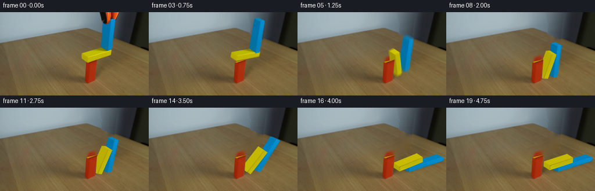
展开代码变化
--- 上一保存版本
+++ 本次保存版本
@@ -3,6 +3,7 @@
from PIL import Image, ImageDraw
import cv2
from scipy.ndimage import gaussian_filter
+from scipy.interpolate import CubicSpline
from artifact_io import save
ROOT=Path(__file__).resolve().parent
@@ -19,7 +20,8 @@
toolpoly=[(171.8,-2),(204,-2),(201.5,5),(198,12.1),(190.1,10.7),(188.9,15.4),(187.1,18.7),(184.1,21.1),(180.7,20.5),(177.9,18.9),(175.4,15.7),(173.8,9.0)]
yellowpoly=[(140,70.8),(173.6,60),(192.6,62.9),(191.2,73.8),(150.7,87.0),(139.5,80.0)]
bluepoly=[(178.1,10.5),(197.9,9.9),(199,12),(193.1,64.8),(185.4,67.1),(173.1,61.5)]
-objmask=np.maximum.reduce([polygon_mask(p) for p in [toolpoly,yellowpoly,bluepoly]])
+redpoly=[(148.2,81.0),(161.4,76.9),(167.2,80.8),(164.0,118.5),(151.0,123.1),(145.7,118.7)]
+objmask=np.maximum.reduce([polygon_mask(p) for p in [toolpoly,yellowpoly,bluepoly,redpoly]])
objmask=cv2.dilate(objmask,np.ones((3,3),np.uint8))
bg=cv2.inpaint(src,objmask,5,cv2.INPAINT_TELEA).astype(float)
# The table has shallow diagonal wood grain. Continue it along its direction,
@@ -38,15 +40,28 @@
noise=np.mean(vals,axis=0) if vals else np.zeros(3)
patch[yy,xx]=noise
bg[wood]=np.clip(bg[wood]+patch[wood]*.7,0,255)
-wall=(objmask>0)&(yg<edge+.6)
-for yy,xx in zip(*np.where(wall)):
- # A smooth wall gradation, with a darker vertical panel to the right.
- xa=166;xb=205
- left=src[min(yy,28),xa].astype(float)
- right=src[yy,xb].astype(float)
- if yy>28:left=src[yy,169].astype(float) if yy<34 else np.array([99,116,126.])
- f=np.clip((xx-xa)/(xb-xa),0,1)
- bg[yy,xx]=left*(1-f)+right*f
+# Horizontal cubic continuation of the photographed wall illumination. Using
+# valid boundary samples avoids any visible cutout-shaped seams.
+sm=gaussian_filter(src.astype(float),(1.0,1.0,0))
+for yy in range(50):
+ missing=np.where((objmask[yy]>0)&(yy<edge[yy]+.7))[0]
+ if not len(missing):continue
+ x0=int(missing.min());x1=int(missing.max())
+ xs=[max(0,x0-13),max(0,x0-7),x0-2,x1+2,min(255,x1+7),min(255,x1+13)]
+ xs=np.unique(xs)
+ vals=sm[yy,xs]
+ curve=CubicSpline(xs,vals,axis=0,bc_type='natural')
+ bg[yy,missing]=curve(missing)
+# A half-pixel feathered straight table edge continues behind the blue block.
+# Only the missing strip itself is changed.
+for yy,xx in zip(*np.where(objmask>0)):
+ e=27.35+(xx-149)*.390
+ if abs(yy-e)<1.5:
+ f=np.clip((yy-e+.65)/1.3,0,1)
+ wallcol=sm[min(yy,42),min(xx+14,219)]
+ # illumination at the unoccluded table on either side of the block
+ tablecol=sm[min(yy+7,143),xx]
+ bg[yy,xx]=wallcol*(1-f)+tablecol*f
# Preserve the original red support and the non-occluded table.
bg=np.uint8(np.clip(bg,0,255))
Image.fromarray(bg).save(ROOT/'.tmp/background.png')
@@ -113,7 +128,7 @@
for k in range(1201):
states.append(np.array([[*b.p,b.a] for b in bs]))
for b in bs:
- b.v[1]-=165*DT;b.v*=.9998;b.om*=.9997;b.p+=b.v*DT;b.a+=b.om*DT
+ b.v[1]-=300*DT;b.v*=.9998;b.om*=.9997;b.p+=b.v*DT;b.a+=b.om*DT
for it in range(7):
for b in bs:
pts=b.verts();d=-min(pts[:,1])
@@ -186,6 +201,10 @@
invalid=(sample[:,:,0]>45)|(sample[:,:,1]<70)
sample[invalid]=tex[invalid]
tex=sample
+ # The face edge pixels mix with neighbours in the photograph. Extend
+ # interior color to texture borders, instead of baking dark outline seams.
+ tex[:3]=tex[3:4];tex[-3:]=tex[-4:-3]
+ tex[:,:3]=tex[:,3:4];tex[:,-3:]=tex[:,-4:-3]
b.tex[fi]=np.uint8(np.clip(tex,0,255))
# High-resolution direct rasterization with a depth buffer and bilinear texture sampling.
@@ -213,12 +232,21 @@
toolalpha=gaussian_filter(toolalpha,.65)
toolsource=np.asarray(Image.fromarray(src).resize((W*S,H*S),Image.Resampling.BICUBIC)).astype(float)
-# Original red support, used verbatim, with its depth retained for occlusion.
-redpoly=[(148.2,85.9),(167,81.4),(164,118.5),(151,123.1),(145.7,118.7)]
+# Recover the previously hidden cap of the standing red timber; lower side
+# surfaces use the original photographed wood paint pixels without motion.
+redpoly=[(148.1,81.3),(161.3,77.05),(167.1,81.05),(164.0,118.4),(151.1,122.7),(146.1,118.7)]
redmask=gaussian_filter(polygon_mask(redpoly,S).astype(float)/255,.75)
+redimage=Image.new('RGB',(W*S,H*S));rd=ImageDraw.Draw(redimage)
+def rp(poly,col):rd.polygon([(round(x*S),round(y*S)) for x,y in poly],fill=col)
+rp([(148.1,81.3),(161.3,77.05),(167.1,81.05),(154,85.35)],(159,45,15))
+rp([(148.1,81.3),(154,85.35),(151.1,122.7),(146.1,118.7)],(164,43,14))
+rp([(154,85.35),(167.1,81.05),(164,118.4),(151.1,122.7)],(171,46,16))
+redphoto=(src[:,:,0]>85)&(src[:,:,0]>2.3*src[:,:,1])&(src[:,:,1]<75)&(yg>83)
+redphoto=cv2.resize(redphoto.astype(float),(W*S,H*S),interpolation=cv2.INTER_LINEAR)*redmask
+redcanvas=np.asarray(redimage).astype(float)*(1-redphoto[:,:,None])+toolsource*redphoto[:,:,None]
def draw(t):
- physical=max(0,t-.55)
+ physical=max(0,t-.45)
k=min(int(physical/DT),len(states)-2);f=physical/DT-k
st=states[k]*(1-f)+states[k+1]*f
# Freeze the support: it remains standing after the overhanging blocks fall.
@@ -244,7 +272,7 @@
canvas*=1-shhigh[:,:,None]
depth=np.full((H*S,W*S),-1e6,float)
# Red appears exactly as photographed.
- canvas=canvas*(1-redmask[:,:,None])+toolsource*redmask[:,:,None]
+ canvas=canvas*(1-redmask[:,:,None])+redcanvas*redmask[:,:,None]
yy,xx=np.mgrid[:H*S,:W*S]
zred=(122.4-yy/S).clip(0,38)
depth[redmask>.35]=(-3.0+zred*.59)[redmask>.35]
候选 03播放与检查图
候选 04播放与检查图
点击播放 · 原生 RGB 像素

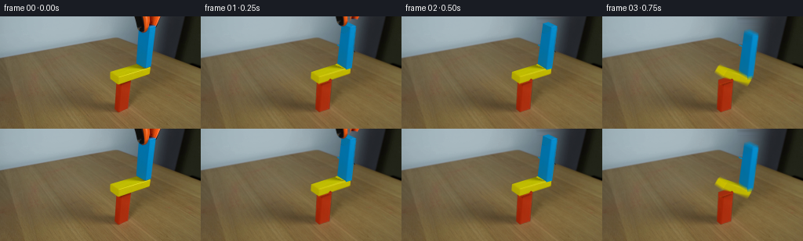
展开代码变化
--- 上一保存版本 +++ 本次保存版本 @@ -60,7 +60,7 @@ f=np.clip((yy-e+.65)/1.3,0,1) wallcol=sm[min(yy,42),min(xx+14,219)] # illumination at the unoccluded table on either side of the block - tablecol=sm[min(yy+7,143),xx] + tablecol=sm[min(yy+7,143),max(0,xx-27)] bg[yy,xx]=wallcol*(1-f)+tablecol*f # Preserve the original red support and the non-occluded table. bg=np.uint8(np.clip(bg,0,255))
候选 05播放与检查图
点击播放 · 原生 RGB 像素

展开代码变化
--- 上一保存版本 +++ 本次保存版本 @@ -58,7 +58,7 @@ e=27.35+(xx-149)*.390 if abs(yy-e)<1.5: f=np.clip((yy-e+.65)/1.3,0,1) - wallcol=sm[min(yy,42),min(xx+14,219)] + wallcol=bg[max(0,yy-4),xx].copy() # illumination at the unoccluded table on either side of the block tablecol=sm[min(yy+7,143),max(0,xx-27)] bg[yy,xx]=wallcol*(1-f)+tablecol*f
候选 06播放与检查图
点击播放 · 原生 RGB 像素

展开代码变化
--- 上一保存版本 +++ 本次保存版本 @@ -42,7 +42,7 @@ bg[wood]=np.clip(bg[wood]+patch[wood]*.7,0,255) # Horizontal cubic continuation of the photographed wall illumination. Using # valid boundary samples avoids any visible cutout-shaped seams. -sm=gaussian_filter(src.astype(float),(1.0,1.0,0)) +sm=gaussian_filter(bg.astype(float),(1.0,1.0,0)) for yy in range(50): missing=np.where((objmask[yy]>0)&(yy<edge[yy]+.7))[0] if not len(missing):continue
可观测工具轨迹
实际执行的命令与返回图片。
命令 1exit 0
/bin/bash -lc 'ls -la && cat prompt.txt && cat GENERATION_RULES.md'
命令 2exit 0
/bin/bash -lc "cat artifact_io.py && python - <<'PY'
from PIL import Image
im=Image.open('first_frame.png');im.resize((1024,576)).save('.tmp/first_large.png')
PY"命令 3exit 0
/bin/bash -lc "python - <<'PY'
import importlib.util
for m in ['numpy','scipy','PIL','cv2']:
print(m, bool(importlib.util.find_spec(m)))
from PIL import Image
im=Image.open('first_frame.png');im.resize((1024,576),Image.Resampling.NEAREST).save('.tmp/pixel.png')
PY"命令 4exit 0
/bin/bash -lc "python - <<'PY'
from PIL import Image
im=Image.open('first_frame.png')
for y in [0,10,20,30,40,50,60,80,100,120]:
print(y,[im.getpixel((x,y)) for x in [160,166,170,175,180,185,190,195,200,205,210]])
PY"命令 5exit 0
/bin/bash -lc "python - <<'PY'
from PIL import Image
im=Image.open('first_frame.png'); im.crop((168,0,204,70)).resize((432,840)).save('.tmp/blue.png')
PY"命令 6exit 0
/bin/bash -lc "python - <<'PY'
from PIL import Image, ImageDraw
im=Image.open('first_frame.png').resize((1280,720))
d=ImageDraw.Draw(im)
for x in range(140,205,5):
d.line((x*5,0,x*5,720),fill=(255,255,255,80)); d.text((x*5,680),str(x),fill='white')
for y in range(0,130,5):
d.line((690,y*5,1020,y*5),fill=(255,255,255,80));d.text((1010,y*5),str(y),fill='white')
im.save('.tmp/grid.png')
PY"命令 7exit 0
/bin/bash -lc "python - <<'PY'
from PIL import Image
im=Image.open('first_frame.png');im.crop((135,60,197,128)).resize((620,680)).save('.tmp/blocks.png')
PY"命令 8exit 0
/bin/bash -lc "cat > .tmp/testsim.py <<'PY'
import numpy as np
class Body:
def __init__(self,x,z,w,h,m):
self.p=np.array([x,z],float);self.v=np.zeros(2);self.a=0.;self.om=0.;self.w=w;self.h=h;self.m=m;self.im=1/m;self.ii=12/(m*(w*w+h*h))
def verts(self):
c=np.cos(self.a);s=np.sin(self.a);return np.array([[-self.w/2,-self.h/2],[self.w/2,-self.h/2],[self.w/2,self.h/2],[-self.w/2,self.h/2]])@np.array([[c,s],[-s,c]])+self.p
def cross(a,b):return a[0]*b[1]-a[1]*b[0]
def vel(b,r):return b.v+b.om*np.array([-r[1],r[0]])
def impulse(A,B,n,points,fr=.48):
for p in points:
ra=p-A.p
rb=p-B.p if B else np.zeros(2)
rv=(vel(B,rb) if B else np.zeros(2))-vel(A,ra)
vn=rv@n
if vn>=0:continue
den=A.im+(B.im if B else 0)+cross(ra,n)**2*A.ii+(cross(rb,n)**2*B.ii if B else 0)
j=-(1.07 if abs(vn)>15 else 1)*vn/den
J=j*n;A.v-=J*A.im;A.om-=cross(ra,J)*A.ii
if B:B.v+=J*B.im;B.om+=cross(rb,J)*B.ii
t=np.array([-n[1],n[0]])
rv=(vel(B,rb) if B else np.zeros(2))-vel(A,ra)
den=A.im+(B.im if B else 0)+cross(ra,t)**2*A.ii+(cross(rb,t)**2*B.ii if B else 0)
jt=np.clip(-(rv@t)/den,-j*fr,j*fr);J=jt*t
A.v-=J*A.im;A.om-=cross(ra,J)*A.ii
if B:B.v+=J*B.im;B.om+=cross(rb,J)*B.ii
def polyclip(poly,clip):
for i in range(4):
a=clip[i];b=clip[(i+1)%4];out=[]
for j in range(len(poly)):
p=poly[j];q=poly[(j+1)%len(poly)];dp=cross(b-a,p-a);dq=cross(b-a,q-a)
if dp>=-1e-8:out.append(p)
if (dp>=0)"'!=(dq>=0):out.append(p+(q-p)*dp/(dp-dq))
poly=out
if not poly:break
return np.array(poly)
def collision(A,B):
pa=A.verts();pb=B.verts();dep=1e9;best=None
for a in [A.a,B.a]:
for n in [np.array([np.cos(a),np.sin(a)]),np.array([-np.sin(a),np.cos(a)])]:
va=pa@n;vb=pb@n;d=min(max(va),max(vb))-max(min(va),min(vb))
if d<0:return
if d<dep:dep=d;best=n
if (B.p-A.p)@best<0:best=-best
poly=polyclip(list(pa),pb)
if len(poly)==0:return
t=np.array([-best[1],best[0]])
points=[poly[np.argmin(poly@t)],poly[np.argmax(poly@t)]]
impulse(A,B,best,points)
corr=max(dep-.015,0)*.6/(A.im+B.im)
A.p-=best*corr*A.im;B.p+=best*corr*B.im
bs=[Body(0,18.75,12.2,37.5,12.2*37.5),Body(10.8,41.75,39.7,8.5,39.7*8.5),Body(27.25,72,6.8,52,6.8*52)]
states=[];dt=1/240
for k in range(1201):
if k%60==0:states.append(np.array([[*b.p,b.a,*b.v,b.om] for b in bs]))
for b in bs:
b.v[1]-=200*dt;b.v*=.9998;b.om*=.9997;b.p+=b.v*dt;b.a+=b.om*dt
for it in range(8):
for b in bs:
pts=b.verts();d=-min(pts[:,1])
if d>0:
ground=pts[pts[:,1]<.2].copy();ground[:,1]=0
impulse(b,None,np.array([0.,-1.]),ground,.52)
b.p[1]+=max(d-.005,0)*.5
for i in range(3):
for j in range(i+1,3):collision(bs[i],bs[j])
np.save('"'.tmp/states.npy',states)
for t,s in enumerate(states): print(round(t*.25,2),np.round(s[:,:3],2))
PY
python .tmp/testsim.py"命令 9exit 0
/bin/bash -lc "cp .tmp/testsim.py .tmp/testsim2.py
python - <<'PY'
p='.tmp/testsim2.py'
s=open(p).read().replace('bs=[Body(0,18.75,12.2,37.5,12.2*37.5),Body(10.8,41.75,39.7,8.5,39.7*8.5),Body(27.25,72,6.8,52,6.8*52)]','bs=[Body(0,18.75,12.8,37.5,12.8*37.5),Body(11.1,41.75,40,8.5,40*8.5),Body(29.8,71.96,6.4,51.5,6.4*51.5)]\\nbs[2].a=-.064;bs[2].om=-.48')
s=s.replace('for j in range(i+1,3):collision(bs[i],bs[j])','for j in range(i+1,3):\\n if i==0 and k*dt>.45:continue\\n collision(bs[i],bs[j])')
open(p,'w').write(s)
PY
python .tmp/testsim2.py"命令 10exit 0
/bin/bash -lc "python - <<'PY'
import numpy as np
from PIL import Image
from scipy.ndimage import gaussian_filter
im=np.asarray(Image.open('first_frame.png')).astype(float)
y,x=np.mgrid[:144,:256]
# seek wood flow shifts correlation in clear lower/left region
hi=im[:,:,0]-gaussian_filter(im[:,:,0],2)
for dy in [4,8,12,16]:
cors=[]
for dx in range(-18,19):
aa=hi[65:125,20:110];bb=hi[65+dy:125+dy,20+dx:110+dx]
if bb.shape"'!=aa.shape:continue
cors.append((np.corrcoef(aa.flatten(),bb.flatten())[0,1],dx))
print(dy,sorted(cors,reverse=True)[:3])
PY'命令 11exit 0
/bin/bash -lc "python - <<'PY'
from PIL import Image
im=Image.open('first_frame.png')
for y in [0,10,20,30,40,45,50]:
print(y,[(x,im.getpixel((x,y))) for x in range(160,221,5)])
PY"命令 12exit 0
/bin/bash -lc "cat > generate.py <<'PY'
from pathlib import Path
import numpy as np
from PIL import Image, ImageDraw
import cv2
from scipy.ndimage import gaussian_filter
from artifact_io import save
ROOT=Path(__file__).resolve().parent
W,H=256,144
S=4
src=np.asarray(Image.open(ROOT/'first_frame.png').convert('RGB'))
# The unchanged table and wall are reconstructed only where the moving objects
# reveal them. All other photographed pixels remain untouched.
def polygon_mask(poly, scale=1):
im=Image.new('L',(W*scale,H*scale));ImageDraw.Draw(im).polygon([(round(x*scale),round(y*scale)) for x,y in poly],fill=255)
return np.asarray(im)
toolpoly=[(171.8,-2),(204,-2),(201.5,5),(198,12.1),(190.1,10.7),(188.9,15.4),(187.1,18.7),(184.1,21.1),(180.7,20.5),(177.9,18.9),(175.4,15.7),(173.8,9.0)]
yellowpoly=[(140,70.8),(173.6,60),(192.6,62.9),(191.2,73.8),(150.7,87.0),(139.5,80.0)]
bluepoly=[(178.1,10.5),(197.9,9.9),(199,12),(193.1,64.8),(185.4,67.1),(173.1,61.5)]
objmask=np.maximum.reduce([polygon_mask(p) for p in [toolpoly,yellowpoly,bluepoly]])
objmask=cv2.dilate(objmask,np.ones((3,3),np.uint8))
bg=cv2.inpaint(src,objmask,5,cv2.INPAINT_TELEA).astype(float)
# The table has shallow diagonal wood grain. Continue it along its direction,
# retaining the illumination trend estimated by local inpainting.
yg,xg=np.mgrid[:H,:W]
edge=27+(xg-149)*.393
wood=(objmask>0)&(yg>=edge+.6)
low=gaussian_filter(src.astype(float),(4,4,0))
patch=np.zeros_like(bg)
for yy,xx in zip(*np.where(wood)):
vals=[]
for dy in [18,24,30,36,-18,-24,-30,-36]:
sy=yy+dy;sx=xx+round(dy*.72)
if 1<=sy<H-1 and 1<=sx<W-1 and objmask[sy,sx]==0 and sy>27+(sx-149)*.393+2:
vals.append(src[sy,sx].astype(float)-low[sy,sx])
noise=np.mean(vals,axis=0) if vals else np.zeros(3)
patch[yy,xx]=noise
bg[wood]=np.clip(bg[wood]+patch[wood]*.7,0,255)
wall=(objmask>0)&(yg<edge+.6)
for yy,xx in zip(*np.where(wall)):
# A smooth wall gradation, with a darker vertical panel to the right.
xa=166;xb=205
left=src[min(yy,28),xa].astype(float)
right=src[yy,xb].astype(float)
if yy>28:left=src[yy,169].astype(float) if yy<34 else np.array([99,116,126.])
f=np.clip((xx-xa)/(xb-xa),0,1)
bg[yy,xx]=left*(1-f)+right*f
# Preserve the original red support and the non-occluded table.
bg=np.uint8(np.clip(bg,0,255))
Image.fromarray(bg).save(ROOT/'.tmp/background.png')
# A small impulse-based rectangle solver (positions in centimetre-like units).
# The extrusion directions are kept independent from the planar mechanics.
class Body:
def __init__(self,x,z,w,h,m):
self.p=np.array([x,z],float);self.v=np.zeros(2);self.a=0.;self.om=0.;self.w=w;self.h=h;self.m=m;self.im=1/m;self.ii=12/(m*(w*w+h*h))
def verts(self):
c=np.cos(self.a);s=np.sin(self.a)
return np.array([[-self.w/2,-self.h/2],[self.w/2,-self.h/2],[self.w/2,self.h/2],[-self.w/2,self.h/2]])@np.array([[c,s],[-s,c]])+self.p
def cross(a,b):return a[0]*b[1]-a[1]*b[0]
def vel(b,r):return b.v+b.om*np.array([-r[1],r[0]])
def impulse(A,B,n,points,fr=.48):
for p in points:
ra=p-A.p;rb=p-B.p if B else np.zeros(2)
rv=(vel(B,rb) if B else np.zeros(2))-vel(A,ra);vn=rv@n
if vn>=0:continue
den=A.im+(B.im if B else 0)+cross(ra,n)**2*A.ii+(cross(rb,n)**2*B.ii if B else 0)
j=-(1.055 if abs(vn)>15 else 1)*vn/den
J=j*n;A.v-=J*A.im;A.om-=cross(ra,J)*A.ii
if B:B.v+=J*B.im;B.om+=cross(rb,J)*B.ii
t=np.array([-n[1],n[0]])
rv=(vel(B,rb) if B else np.zeros(2))-vel(A,ra)
den=A.im+(B.im if B else 0)+cross(ra,t)**2*A.ii+(cross(rb,t)**2*B.ii if B else 0)
jt=np.clip(-(rv@t)/den,-j*fr,j*fr);J=jt*t
A.v-=J*A.im;A.om-=cross(ra,J)*A.ii
if B:B.v+=J*B.im;B.om+=cross(rb,J)*B.ii
def polyclip(poly,clip):
for i in range(4):
a=clip[i];b=clip[(i+1)%4];out=[]
for j in range(len(poly)):
p=poly[j];q=poly[(j+1)%len(poly)];dp=cross(b-a,p-a);dq=cross(b-a,q-a)
if dp>=-1e-8:out.append(p)
if (dp>=0)"'!=(dq>=0):out.append(p+(q-p)*dp/(dp-dq))
poly=out
if not len(poly):break
return np.array(poly)
def collision(A,B):
pa=A.verts();pb=B.verts();dep=1e9;best=None
for a in [A.a,B.a]:
for n in [np.array([np.cos(a),np.sin(a)]),np.array([-np.sin(a),np.cos(a)])]:
va=pa@n;vb=pb@n;d=min(max(va),max(vb))-max(min(va),min(vb))
if d<0:return
if d<dep:dep=d;best=n
if (B.p-A.p)@best<0:best=-best
poly=polyclip(list(pa),pb)
if not len(poly):return
t=np.array([-best[1],best[0]])
points=[poly[np.argmin(poly@t)],poly[np.argmax(poly@t)]]
impulse(A,B,best,points)
corr=max(dep-.015,0)*.62/(A.im+B.im)
A.p-=best*corr*A.im;B.p+=best*corr*B.im
DT=1/240
bs=[Body(0,18.75,12.8,37.5,480),Body(11.1,41.75,40,8.5,340),Body(29.8,72.5,6.4,53,340)]
bs[2].a=-.035;bs[2].om=-.45
initial=np.array([[*b.p,b.a] for b in bs])
states=[]
for k in range(1201):
states.append(np.array([[*b.p,b.a] for b in bs]))
for b in bs:
b.v[1]-=165*DT;b.v*=.9998;b.om*=.9997;b.p+=b.v*DT;b.a+=b.om*DT
for it in range(7):
for b in bs:
pts=b.verts();d=-min(pts[:,1])
if d>0:
pts=pts[pts[:,1]<.18].copy();pts[:,1]=0
impulse(b,None,np.array([0.,-1.]),pts,.56)
b.p[1]+=max(d-.005,0)*.55
for i in range(3):
for j in range(i+1,3):
# Once the beam slips past the support it clears its far side.
if i==0 and k*DT>.50:continue
collision(bs[i],bs[j])
states=np.asarray(states)
# Projected cuboids, textured from the initial photograph. No scene renderer is
# used: faces are projected and rasterized directly by elementary geometry.
sgn=np.array([[-1,-1,-1],[1,-1,-1],[1,1,-1],[-1,1,-1],[-1,-1,1],[1,-1,1],[1,1,1],[-1,1,1]],float)
faces=[([0,3,7,4],[-1,0,0]),([1,5,6,2],[1,0,0]),([0,4,5,1],[0,-1,0]),([3,2,6,7],[0,1,0]),([4,7,6,5],[0,0,1]),([0,1,2,3],[0,0,-1])]
U=np.array([1.,-.325]);V=np.array([.78,.51]);Z=np.array([.075,-1.])
light=np.array([-.40,.46,1.]);light/=np.linalg.norm(light)
view=np.array([-.8275,.975,.763]);view/=np.linalg.norm(view)
class Block:
def __init__(self,idx,w,h,d,anchor,yoffset,color,U=U,V=V):
self.idx=idx;self.d=d;self.w=w;self.h=h;self.anchor=np.array(anchor,float);self.yoffset=yoffset;self.color=np.array(color,float);self.U=U;self.V=V
self.local=sgn*np.array([w,d,h])/2
self.tex={}
def geometry(self,state):
x,z,a=state;c=np.cos(a);s=np.sin(a)
v=self.local.copy();v[:,0]=c*self.local[:,0]-s*self.local[:,2];v[:,2]=s*self.local[:,0]+c*self.local[:,2]
# Object-specific initial projection preserves the measured perspective.
a0=initial[self.idx,2];c0=np.cos(a0);s0=np.sin(a0)
ini=self.local.copy();ini[:,0]=c0*self.local[:,0]-s0*self.local[:,2];ini[:,2]=s0*self.local[:,0]+c0*self.local[:,2]
image=self.anchor+v[:,0,None]*self.U+v[:,1,None]*self.V+v[:,2,None]*Z
image+=(x-initial[self.idx,0])*self.U+(z-initial[self.idx,1])*Z
world=v+np.array([x,self.yoffset,z])
return image,world
def normal(self,n,a):
n=np.array(n,float);c=np.cos(a);s=np.sin(a)
return np.array([c*n[0]-s*n[2],n[1],s*n[0]+c*n[2]])
blocks=[Block(1,40,8.5,13.4,[165.7,72.5],-3.8,[188,179,3]),Block(2,6.4,53,14.7,[186.2,37.65],-3.8,[3,119,171],U=np.array([1.10,-.35]),V=np.array([.80,.378]))]
# source texture maps (128 square) and natural subpixel grain for newly exposed surfaces
rng=np.random.default_rng(22)
N=128
uvdst=np.float32([[0,0],[N-1,0],[N-1,N-1],[0,N-1]])
blue_or_tool=(polygon_mask(bluepoly)>0)|(polygon_mask(toolpoly)>0)
for b in blocks:
ps,_=b.geometry(initial[b.idx])
for fi,(inds,n) in enumerate(faces):
normal=b.normal(n,initial[b.idx,2])
visible=np.dot(normal,view)>.025
if b.idx==1:
cols=[(173,168,2),(163,154,3),(164,154,2),(190,181,3),(183,179,1),(152,142,3)]
else:
cols=[(3,112,161),(1,105,157),(1,116,165),(2,136,196),(8,134,191),(2,102,149)]
base=np.array(cols[fi],float)
noise=gaussian_filter(rng.normal(size=(N,N)),(.6,.4))*1.05
tex=np.broadcast_to(base,(N,N,3)).copy()+noise[:,:,None]*np.array([.55,1,1])
if visible:
M=cv2.getPerspectiveTransform(np.float32(ps[inds]),uvdst)
sample=cv2.warpPerspective(src.astype(float),M,(N,N),flags=cv2.INTER_LINEAR,borderMode=cv2.BORDER_REFLECT)
if b.idx==1:
bad=cv2.warpPerspective(blue_or_tool.astype(np.uint8)*255,M,(N,N),flags=cv2.INTER_LINEAR)>5
sample[bad]=tex[bad]
else:
bad=cv2.warpPerspective(polygon_mask(toolpoly),M,(N,N),flags=cv2.INTER_LINEAR)>2
# Tool-cast shadows at the top of the timber are removed as it withdraws.
sample[bad]=tex[bad]
invalid=(sample[:,:,0]>45)|(sample[:,:,1]<70)
sample[invalid]=tex[invalid]
tex=sample
b.tex[fi]=np.uint8(np.clip(tex,0,255))
# High-resolution direct rasterization with a depth buffer and bilinear texture sampling.
def triangle(canvas,depth,pts,zs,uv,texture,shade):
p=pts*S
xmin=max(0,int(np.floor(p[:,0].min())));xmax=min(W*S-1,int(np.ceil(p[:,0].max())))
ymin=max(0,int(np.floor(p[:,1].min())));ymax=min(H*S-1,int(np.ceil(p[:,1].max())))
if xmin>xmax or ymin>ymax:return
yy,xx=np.mgrid[ymin:ymax+1,xmin:xmax+1];xx=xx+.5;yy=yy+.5
den=(p[1,1]-p[2,1])*(p[0,0]-p[2,0])+(p[2,0]-p[1,0])*(p[0,1]-p[2,1])
if abs(den)<1e-6:return
a=((p[1,1]-p[2,1])*(xx-p[2,0])+(p[2,0]-p[1,0])*(yy-p[2,1]))/den
c=((p[2,1]-p[0,1])*(xx-p[2,0])+(p[0,0]-p[2,0])*(yy-p[2,1]))/den
d=1-a-c
z=a*zs[0]+c*zs[1]+d*zs[2]
good=(a>=-1e-6)&(c>=-1e-6)&(d>=-1e-6)&(z>depth[ymin:ymax+1,xmin:xmax+1])
if not good.any():return
tx=(a*uv[0,0]+c*uv[1,0]+d*uv[2,0])*(N-1)
ty=(a*uv[0,1]+c*uv[1,1]+d*uv[2,1])*(N-1)
col=cv2.remap(texture,tx.astype(np.float32),ty.astype(np.float32),cv2.INTER_LINEAR,borderMode=cv2.BORDER_REPLICATE).astype(float)*shade
sub=canvas[ymin:ymax+1,xmin:xmax+1];sub[good]=col[good]
depth[ymin:ymax+1,xmin:xmax+1][good]=z[good]
toolalpha=polygon_mask(toolpoly,S).astype(float)/255
toolalpha=gaussian_filter(toolalpha,.65)
toolsource=np.asarray(Image.fromarray(src).resize((W*S,H*S),Image.Resampling.BICUBIC)).astype(float)
# Original red support, used verbatim, with its depth retained for occlusion.
redpoly=[(148.2,85.9),(167,81.4),(164,118.5),(151,123.1),(145.7,118.7)]
redmask=gaussian_filter(polygon_mask(redpoly,S).astype(float)/255,.75)
def draw(t):
physical=max(0,t-.55)
k=min(int(physical/DT),len(states)-2);f=physical/DT-k
st=states[k]*(1-f)+states[k+1]*f
# Freeze the support: it remains standing after the overhanging blocks fall.
st[0]=initial[0]
canvas=np.asarray(Image.fromarray(bg).resize((W*S,H*S),Image.Resampling.BICUBIC)).astype(float)
# Broad soft cast shadows from the top-left illumination.
shadows=np.zeros((H*S,W*S),float)
for b in blocks:
p,world=b.geometry(st[b.idx]);ground=world.copy()
# Shift toward the lower left on the photographed table surface.
zz=ground[:,2].copy();ground[:,0]-=.54*zz;ground[:,1]-=.52*zz;ground[:,2]=0
sh=b.anchor+(ground[:,0]-initial[b.idx,0])[:,None]*b.U+ground[:,1,None]*b.V-(b.yoffset)*b.V+(0-initial[b.idx,1])*Z
# Convex shadow footprint grows diffuse with altitude.
hull=cv2.convexHull(np.float32(sh*S)).astype(np.int32)
mask=np.zeros((H*S,W*S),np.uint8);cv2.fillConvexPoly(mask,hull,255)
height=float(max(world[:,2].mean(),0))
blur=cv2.GaussianBlur(mask.astype(float)/255,(0,0),sigmaX=(1.6+height*.10)*S)
shadows=np.maximum(shadows,blur*(.14 if height>10 else .23))
# Do not cast a shadow onto the wall or intensify the static red'"'s old shadow.
table=yg>edge
shlow=cv2.resize(shadows,(W,H),interpolation=cv2.INTER_AREA)*table
shhigh=cv2.resize(shlow,(W*S,H*S),interpolation=cv2.INTER_LINEAR)
canvas*=1-shhigh[:,:,None]
depth=np.full((H*S,W*S),-1e6,float)
# Red appears exactly as photographed.
canvas=canvas*(1-redmask[:,:,None])+toolsource*redmask[:,:,None]
yy,xx=np.mgrid[:H*S,:W*S]
zred=(122.4-yy/S).clip(0,38)
depth[redmask>.35]=(-3.0+zred*.59)[redmask>.35]
for b in blocks:
ps,world=b.geometry(st[b.idx]);zs=world@view
for fi,(inds,n) in enumerate(faces):
normal=b.normal(n,st[b.idx,2])
if normal@view<=.005:continue
old=b.normal(n,initial[b.idx,2])
lit=.73+.27*max(0,normal@light)
orig=.73+.27*max(0,old@light)
shade=lit/orig
ids=np.array(inds);uv=np.array([[0,0],[1,0],[1,1],[0,1]],float)
for inds2 in [[0,1,2],[0,2,3]]:
sel=np.array(inds2);triangle(canvas,depth,ps[ids[sel]],zs[ids[sel]],uv[sel],b.tex[fi],shade)
# The grabber lets go, opens slightly, and retreats vertically out of shot.
up=42*min(1,max(0,(t-.07)/.68))**1.25
opening=2.0*min(1,max(0,t/.3))
for side in [0,1]:
cut=(np.arange(W*S)[None,:] < 189*S) if side==0 else (np.arange(W*S)[None,:]>=189*S)
alpha=toolalpha*cut
trans=np.float32([[1,0,(-opening if side==0 else opening)*S],[0,1,-up*S]])
al=cv2.warpAffine(alpha,trans,(W*S,H*S),flags=cv2.INTER_LINEAR)
col=cv2.warpAffine(toolsource,trans,(W*S,H*S),flags=cv2.INTER_LINEAR)
canvas=canvas*(1-al[:,:,None])+col*al[:,:,None]
result=cv2.resize(np.clip(canvas,0,255).astype(np.uint8),(W,H),interpolation=cv2.INTER_AREA)
return result
frames=[src.copy()]
for i in range(1,20):
t=i/4
# Short real-time exposure for credible falling-block motion blur.
if .7<t<3.45:
samples=[draw(t+dt) for dt in [-.024,0,.024]]
frame=np.uint8(np.mean(samples,axis=0).clip(0,255))
else:frame=draw(t)
frames.append(frame)
save(np.stack(frames),ROOT)
PY
python generate.py"命令 13exit 0
/bin/bash -lc "python - <<'PY'
from PIL import Image
for name in ['.tmp/background.png','frames/08.png','frames/19.png']:
im=Image.open(name);im.resize((1024,576)).save('.tmp/'+name.split('/')[-1].replace('.png','_big.png'))
PY"命令 14exit 0
/bin/bash -lc "python - <<'PY'
p='generate.py'
s=open(p).read()
s=s.replace('from scipy.ndimage import gaussian_filter','from scipy.ndimage import gaussian_filter\\nfrom scipy.interpolate import CubicSpline')
s=s.replace('objmask=np.maximum.reduce([polygon_mask(p) for p in [toolpoly,yellowpoly,bluepoly]])','redpoly=[(148.2,81.0),(161.4,76.9),(167.2,80.8),(164.0,118.5),(151.0,123.1),(145.7,118.7)]\\nobjmask=np.maximum.reduce([polygon_mask(p) for p in [toolpoly,yellowpoly,bluepoly,redpoly]])')
start=s.index('wall=(objmask>0)')
end=s.index('# Preserve the original red',start)
s=s[:start]+'''# Horizontal cubic continuation of the photographed wall illumination. Using
# valid boundary samples avoids any visible cutout-shaped seams.
sm=gaussian_filter(src.astype(float),(1.0,1.0,0))
for yy in range(50):
missing=np.where((objmask[yy]>0)&(yy<edge[yy]+.7))[0]
if not len(missing):continue
x0=int(missing.min());x1=int(missing.max())
xs=[max(0,x0-13),max(0,x0-7),x0-2,x1+2,min(255,x1+7),min(255,x1+13)]
xs=np.unique(xs)
vals=sm[yy,xs]
curve=CubicSpline(xs,vals,axis=0,bc_type='natural')
bg[yy,missing]=curve(missing)
# A half-pixel feathered straight table edge continues behind the blue block.
# Only the missing strip itself is changed.
for yy,xx in zip(*np.where(objmask>0)):
e=27.35+(xx-149)*.390
if abs(yy-e)<1.5:
f=np.clip((yy-e+.65)/1.3,0,1)
wallcol=sm[min(yy,42),min(xx+14,219)]
# illumination at the unoccluded table on either side of the block
tablecol=sm[min(yy+7,143),xx]
bg[yy,xx]=wallcol*(1-f)+tablecol*f
''' +s[end:]
s=s.replace('b.v[1]-=165*DT','b.v[1]-=300*DT')
s=s.replace(\"physical=max(0,t-.55)\",\"physical=max(0,t-.45)\")
# texture seams remove by use central source area rather than edge blur
s=s.replace('b.tex[fi]=np.uint8(np.clip(tex,0,255))', '''# The face edge pixels mix with neighbours in the photograph. Extend
# interior color to texture borders, instead of baking dark outline seams.
tex[:3]=tex[3:4];tex[-3:]=tex[-4:-3]
tex[:,:3]=tex[:,3:4];tex[:,-3:]=tex[:,-4:-3]
b.tex[fi]=np.uint8(np.clip(tex,0,255))''')
start=s.index('# Original red support')
end=s.index('def draw(t):',start)
s=s[:start]+'''# Recover the previously hidden cap of the standing red timber; lower side
# surfaces use the original photographed wood paint pixels without motion.
redpoly=[(148.1,81.3),(161.3,77.05),(167.1,81.05),(164.0,118.4),(151.1,122.7),(146.1,118.7)]
redmask=gaussian_filter(polygon_mask(redpoly,S).astype(float)/255,.75)
redimage=Image.new('RGB',(W*S,H*S));rd=ImageDraw.Draw(redimage)
def rp(poly,col):rd.polygon([(round(x*S),round(y*S)) for x,y in poly],fill=col)
rp([(148.1,81.3),(161.3,77.05),(167.1,81.05),(154,85.35)],(159,45,15))
rp([(148.1,81.3),(154,85.35),(151.1,122.7),(146.1,118.7)],(164,43,14))
rp([(154,85.35),(167.1,81.05),(164,118.4),(151.1,122.7)],(171,46,16))
redphoto=(src[:,:,0]>85)&(src[:,:,0]>2.3*src[:,:,1])&(src[:,:,1]<75)&(yg>83)
redphoto=cv2.resize(redphoto.astype(float),(W*S,H*S),interpolation=cv2.INTER_LINEAR)*redmask
redcanvas=np.asarray(redimage).astype(float)*(1-redphoto[:,:,None])+toolsource*redphoto[:,:,None]
''' +s[end:]
s=s.replace('canvas=canvas*(1-redmask[:,:,None])+toolsource*redmask[:,:,None]','canvas=canvas*(1-redmask[:,:,None])+redcanvas*redmask[:,:,None]')
# red front depth high enough; static occlusion background only region
open(p,'w').write(s)
PY
python generate.py"命令 15exit 0
/bin/bash -lc "python - <<'PY'
p='generate.py';s=open(p).read().replace('tablecol=sm[min(yy+7,143),xx]','tablecol=sm[min(yy+7,143),max(0,xx-27)]')
open(p,'w').write(s)
PY
python generate.py"命令 16exit 0
/bin/bash -lc "python - <<'PY'
p='generate.py';s=open(p).read().replace('wallcol=sm[min(yy,42),min(xx+14,219)]','wallcol=bg[max(0,yy-4),xx].copy()')
open(p,'w').write(s)
PY
python generate.py"命令 17exit 0
/bin/bash -lc "python - <<'PY'
p='generate.py';s=open(p).read().replace('sm=gaussian_filter(src.astype(float),(1.0,1.0,0))','sm=gaussian_filter(bg.astype(float),(1.0,1.0,0))')
open(p,'w').write(s)
PY
python generate.py"命令 18exit 0
/bin/bash -lc "python - <<'PY'
import numpy as np
from PIL import Image
p=np.load('pixels.npz')['pixels']
a=np.asarray(Image.open('first_frame.png').convert('RGB'))
b=np.asarray(Image.open('frames/00.png').convert('RGB'))
print('packed:',p.shape,p.dtype,'frame00 exact:',np.array_equal(a,b),'frames:',len(list(__import__('pathlib').Path('frames').glob('*.png'))))
PY
command -v ffmpeg || true"视觉工具实际返回图片 1
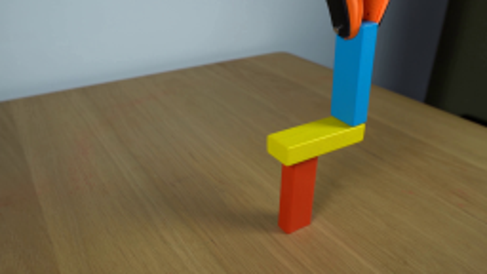
视觉工具实际返回图片 2
视觉工具实际返回图片 3
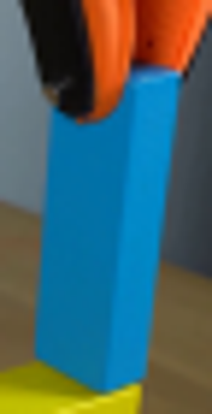
视觉工具实际返回图片 4
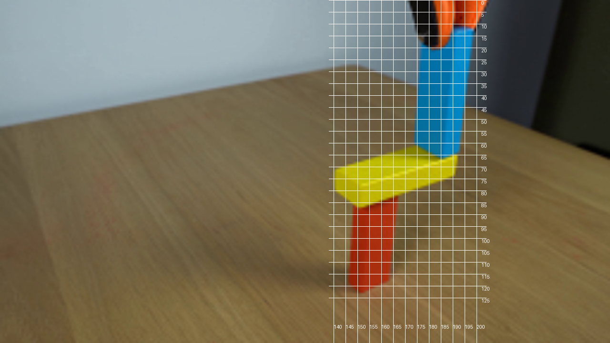
视觉工具实际返回图片 5
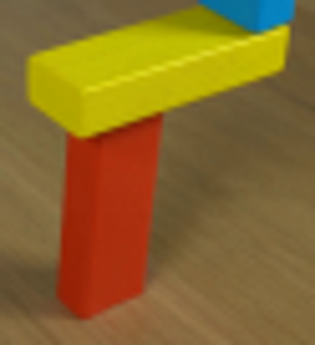
视觉工具实际返回图片 6

视觉工具实际返回图片 7
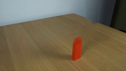
视觉工具实际返回图片 8
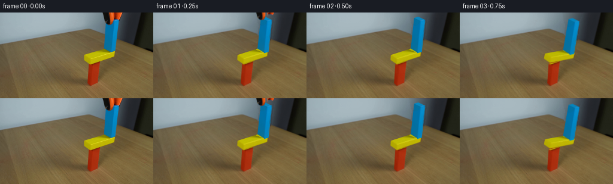
视觉工具实际返回图片 9
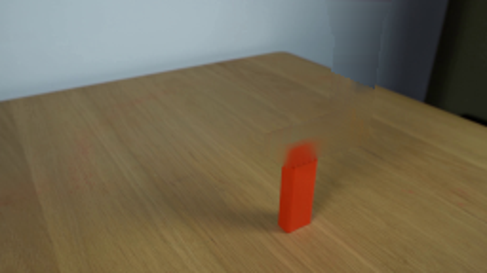
视觉工具实际返回图片 10
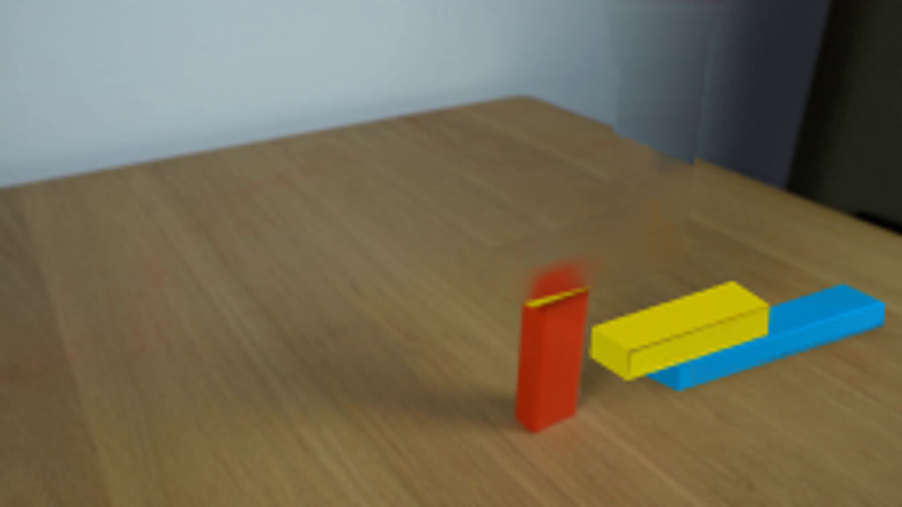
视觉工具实际返回图片 11

视觉工具实际返回图片 12
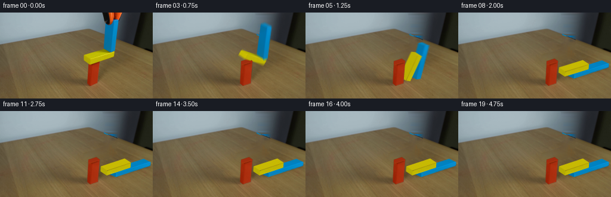
视觉工具实际返回图片 13
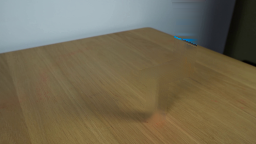
视觉工具实际返回图片 14
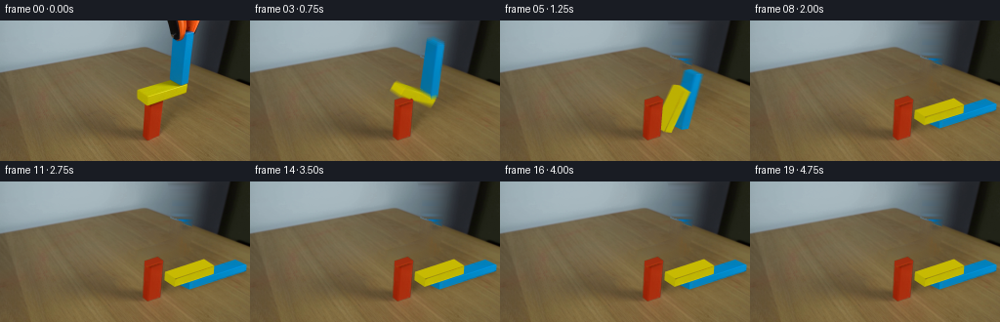
视觉工具实际返回图片 15
保存候选 6 份；完成命令 18 次；可验证图片返回 15 张。原始 API 响应与完整日志保留在本地。